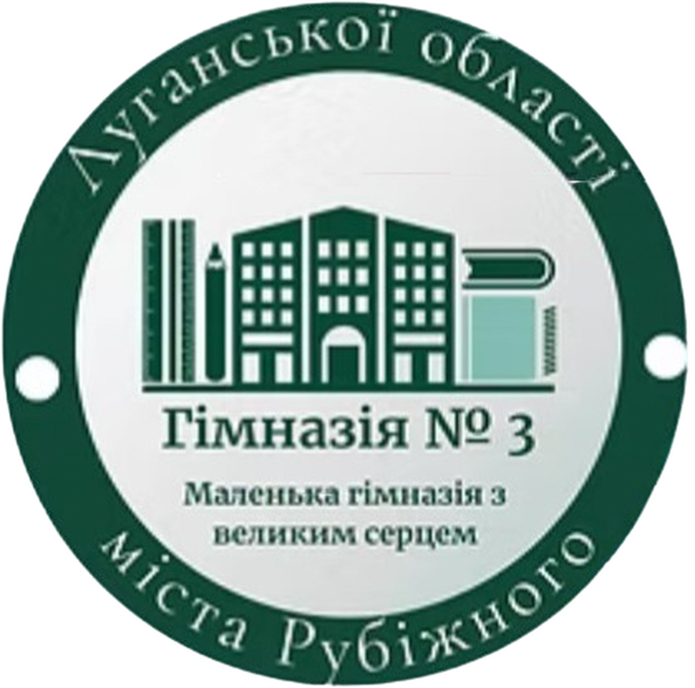

МC
В. О. ДИРЕКТОРА · ЗА ДАНИМИ СТАРОГО САЙТУ
Катралєєв Михайло Сергійович
Адміністрація закладу

ГІМНАЗІЯ №3МІСТО РУБІЖНЕ · ЛУГАНСЬКА ОБЛАСТЬ Контакти ↗Місце, де знання відкривають можливості, підтримка додає впевненості, а кожна дитина має значення.

Вітаємо на сайті Гімназії №3 міста Рубіжного Луганської області!
Наша школа завжди відкрита до діалогу. Ми цінуємо знання, повагу, творчість і прагнення кожної дитини розкривати власні здібності.
Чинний сайт гімназії ↗Шлях гімназії — це люди, події та покоління учнів, які творили її історію.
Загальноосвітня школа I–III ступенів №3 була відкрита 1 вересня 1962 року. Першим директором призначили Бориса Степановича Тарасенка. Разом із ним до нового закладу перейшли педагоги з інших шкіл міста.
У школі навчався майбутній олімпійський чемпіон 1980 року, чемпіон світу та Кубка світу з фехтування Віктор Смирнов.
У 1991 році відкрився перший клас з українською мовою навчання, а з 1992 року школа набула статусу україномовної.
Історія на старому сайті ↗


Основні освітні напрями та корисні сторінки для учнів, батьків і педагогів.
Програми навчання та освітні матеріали.
Переглянути ↗ 02Підходи та матеріали Нової української школи.
Переглянути ↗ 03Інформація про інклюзивну освіту та підтримку.
Переглянути ↗ 04Матеріали для організації навчання онлайн.
Переглянути ↗ 05Посилання на розклад навчальних занять.
Переглянути ↗ 06Перехід до сервісу електронних щоденників.
Відкрити сервіс ↗Педагогічний колектив та адміністрація — важлива частина історії й сьогодення закладу.
Повний кадровий склад ↗Адміністрація закладу
З навчально-виховної роботи
З навчально-виховної роботи
Традиції, творчість, ініціативи та життя шкільної спільноти.
На сайті гімназії зібрані матеріали щодо протидії булінгу, гендерної рівності та безпеки життєдіяльності.
Офіційні матеріали та документи, опубліковані на чинному сайті гімназії.
Актуальні повідомлення та архів новин доступні на чинному сайті гімназії. Цей блок можна буде підключити до зручної системи публікацій.
Відкрити новини ↗ ІЛЮСТРАТИВНЕ ФОТО
ІЛЮСТРАТИВНЕ ФОТО